lecture.15
Lecture 15: File systems
Exam
Files as an abstraction of disk space and their management
Important questions:
- What is the file abstraction and why is it useful?
- What are the syscalls/libc functions in Unix to handle files?
- What is a virtual file system and how does this work?
- What is mounting/unmounting, what is their effect on the directory tree of a Unix system?
- Which methods exist to map a file to disk blocks?
- Describe problems of the approaches/pros/cons
- Which methods exist to manage free space?
- What are the directory and inode structures for typical file systems?
- Unix System V, BSD FFS, Linux ext2/3/4
Background storage
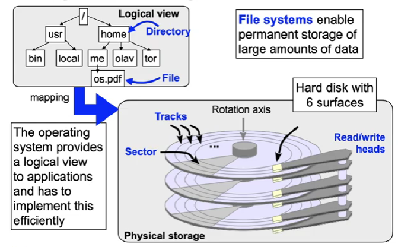
The file abstraction
- Unix principle: "everything is a file"
- more precisely: every resource in the system can be accessed using a name mapped into a directory hierarchy
- access to the resource takes place using the standard Unix system calls for file access
- file permissions are used to control access to the resource
- Examples:
- regular files and directories
- special files for devices, symbolic links, named pipes
- virtual files for process and system information
- Not completely consistent in Unix, but e.g. in the Plan 9 OS:
- network connections and protocols
- access to the graphics frame buffer
Accessing files
- Files are identified by per process file descriptors in the OS
- positive integer number, can be reassigned
- The Unix file access API consists of four simple system calls:
int open(const char *path, int oflag, ...);- Attempts to open the file with the given path name and options for accessing (read only, read/write etc.)
- Returns a file descriptor (fd) refering to the file on success
ssize_t read(int fd, void *buf, size_t nbyte);ssize_t write(int fd, const void *buf, size_t nbyte);- Read (write) nbyte bytes from (to) file fd into (from) the memory starting at user space memory address buf
int close(int fildes);- Closes the file: flushes buffers and invalidates file descriptor
The Unix virtual file system (VFS) switch
- System-wide name space for files
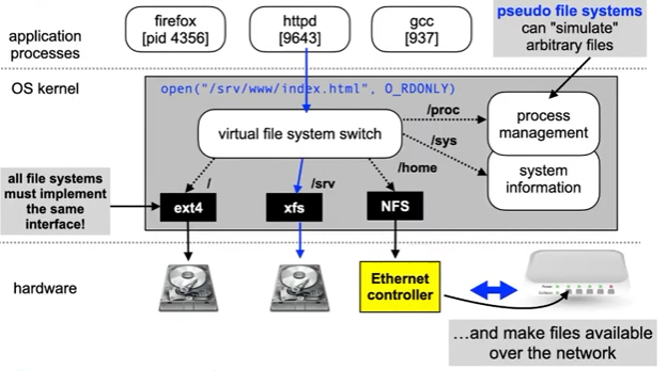
Virtual file system: mounting
System Call:
int mount(const char *source, const char
*target, const char *filesystemtype,
unsigned long mountflags, const void *data);
Attaches ("mounts") a file system to the given directory in the global directory tree System Call:
int umount(const char *target);
Removes the attachment. Note: umount, not unmount! Using both system calls requires system administrator privileges! When the system is booted, all filesystems listed in /etc/fstab are automatically mounted.
File storage
- In most cases, files require multiple blocks of storage on disk
- We simply view a disk as a large array of blocks
- Each block has an identical small size, e.g. 512 bytes
- This is already an abstraction from the heads, tracks and sectors of a real disk drive
- Which of the blocks are used to store a file?
- We simply view a disk as a large array of blocks
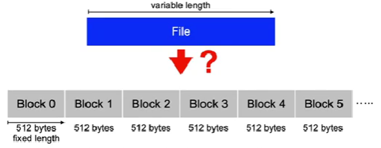
Contigous storage
- A file is stored in blocks with increasing block numbers
- requires to store information about the first block and the number of subsequent blocks, e.g. Start: block 2, length: 3
- Advantage:
- Access to all blocks with minimal delay due to disk arm positioning
- Fast direct access to a given file offset position
- Used for read-only file systems, e.g. CD-ROM/DVD
Contiguous storage problems
- Finding free space on the disk
- required: sufficiently large set of contiguous free disk blocks
- Fragmentation
- free blocks that cannot be used since they are too small for the given file
- cf. main memory management
- The size of new files is usually not known in advance
- Extending (growing the size of) a file is problematic: what if the following blocks are already allocated?
- Requires copying of data if insufficient free following blocks are available
Linked list storage
- Blocks of a file are linked
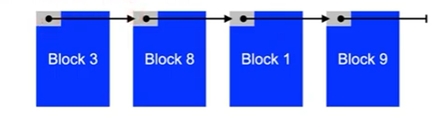
- e.g. used on Commodore disk drives (C64 etc.)
- block size 256 bytes
- first two bytes: track and sector nr. of following block
- if track number = 0 ➛ final block
- 254 byte payload data
- Files can be extended and shrunk
Linked list storage problems
- Available storage is reduced by amount of memory used for pointers
- Problematic when using paging: a page would always require parts of two disk blocks
- Error prone
- a file cannot be completely restored if the pointer information contains errors
- Direct access to arbitrary file positions is difficult
- Requires frequent positioning of the disk head when the data blocks are spread over the disk
Linked list storage: FAT
- Links are stored in separate disk blocks
- FAT: file allocation table (first used in MS-DOS)
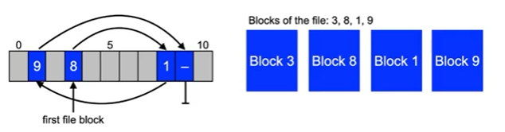
- Advantages:
- complete content of data block is usable
- redundant storage of the FAT is possible
- useful in case of an error
Linked list storage problems (2)
- Additional loading of at least one block required
- it is possible to cache the FAT to increase efficiency
- Unused information is loaded
- FAT contains links for all files
- Search overhead for the data block containing information at a given offset inside a file
- Frequent positioning of the disk head when data blocks are scattered over the disk
Discussion: chunks/extents/clusters
- Variation
- Split a file into sequences of blocks stored contiguously (called chunk, extent or cluster)
- Reduces the number of positioning actions
- Improves the speed to search for a block linear
- depending on the chunk size
- Problems:
- additional information required for managing chunks
- fragmentation
- fixed size: inside of a sequence (internal fragmentation)
- variable size: outside of the sequences (external fragm.)
- Is used in practice, but does not have significant advantages
Indexed storage
- A special disk block contains block numbers of the data blocks of a file
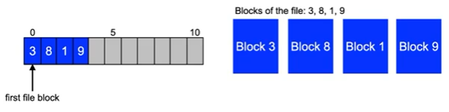
- Problem
- Fixed number of blocks that can be referenced in the index block
- Fragmentation for small files
- Extensions required for large files
- Fixed number of blocks that can be referenced in the index block
Indexed storage: Unix inodes
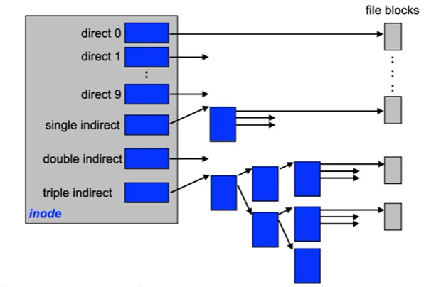
Indexed storage: discussion
- Use of multiple indexing levels
- inodes require a block on the disk in any case (fragmentation is not a problem for small files)
- multiple levels of indexing enable the addressing of large
files
- Disadvantage:
- multiple blocks have to be loaded (only for large files)
Tree sequential storage
- Used in databases to efficiently find records using a search key
- Key space can be sparsely populated
- Can also be used to find chunks of files with a certain file offset, e.g. in NTFS, btrfs, IBM JFS2, Apple HFS+ (B+ tree)
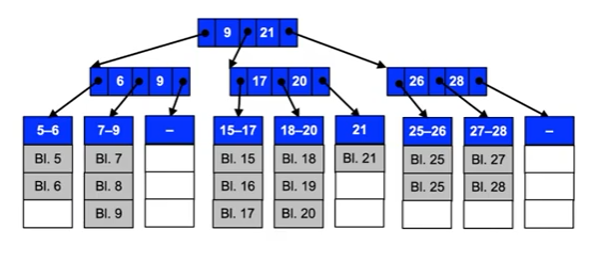
Free space management
Similar to free main memory management
- Bit vectors indicate for each block if it is used or not
- Linked Lists represent free blocks
- linking information can be stored in the free blocks
- Optimization: information on contiguous block is not stored separately but in one single piece
- Optimization: one free block contains many block numbers of additional free blocks and possibly also the block number of an additional block containing the numbers of free blocks
- Tree sequential storage of free block sequences
- Enables faster search for a free sequence of blocks of a given size
- Used e.g. in the SGI XFS file system
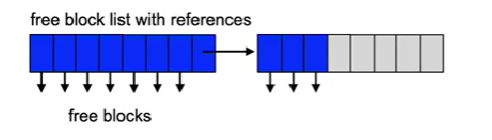
Directory management: lists
- Entries of identical length stored one after the other in a list, e.g.
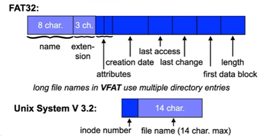
- Problems:
- Linear search for a given entry required
- When sorting the list: fast search, insertion overhead
Using hash functions
- Function maps file name to index in directory list
- Enables faster access to the entry
- no linear search required
- Simple (but bad…) example: ( ∑ character values ) mod N
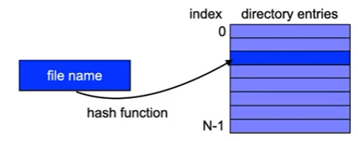
- Problems:
- Collisions (multiple file names mapped to the same entry)
- Adaptation of the list size required if list is full
List elements with variable length
- Example: used in 4.2 BSD, System V Rel. 4, etc.
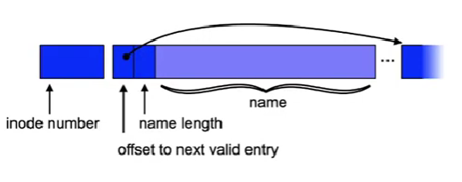
- Problems:
- management of free entries in the list
- fragmentation (need for compaction etc.)
Unix example: System V file system
- Block organization
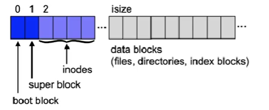
- Boot block contains information used to load the OS
- Superblock contains management data for a file system:
- number of blocks and inodes
- number and list of free blocks and inodes
- attributes (e.g. flag indicating the file system was modified)
Unix example: Berkeley Fast File System
- Block organization (used from 4.2 BSD Unix onwards)
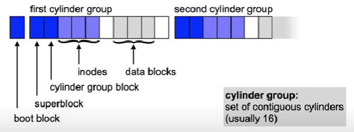
- Copy of the superblock is stored in every cylinder group
- One file is stored inside a single cylinder group if possible
- Directories are distributed, files of a directory are stored together
- Advantage: reduced positioning time
Unix example: Linux ext2/3/4 file system
- Block organization
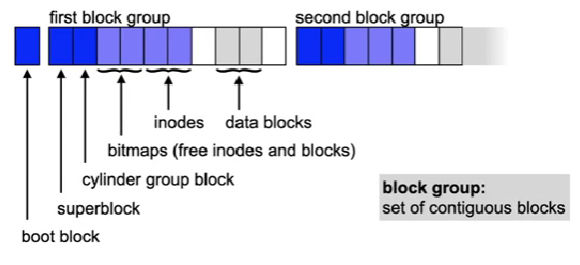
- Similar layout to BSD FFS
- Block groups are independent of cylinders
Conclusion
File systems are an operating system abstraction
- Logically related information is represented and stored as a file
- Often uses a hierarchical directory structure to organize data ... are influenced by the hardware
- Minimization of positioning times for disks
- Wear levelling for Flash memories ... are influenced by the application profile
- Block size
- too small → management data structures can lead to performance loss
- too big → fragmentation wastes disk space
- Structure of directories
- no hash function → long search
- using a hash function → more administrative overhead